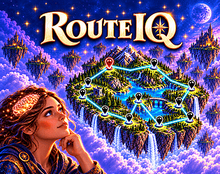
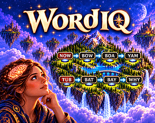
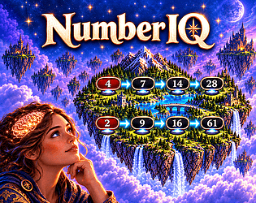
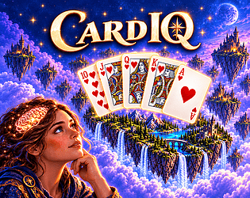
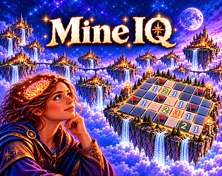
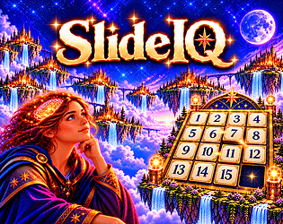

A little play.
A lot to think about.
Find a route. Crack a code. Follow a word.
Pick a challenge and see where your curiosity takes you.
Choose your challenge (hover to see a trailer)
12 games to exploreEchoIQ
Choose your messengers, arrange their order, and craft a message that survives their misunderstandings.
About the game →
RouteIQ
Connect every stop, return to the start, and see how close you can get to the shortest route.
About the game →
WordIQ
Travel from one word to another, one change at a time. Find the ladder that gets you there.
About the game →
NumberIQ
Turn your starting number into the target using a sequence of mathematical operations.
About the game →
CardIQ
Take on the dealer and improve your poker hand with up to five one-card draws.
About the game →SudokuIQ
Settle into classic Sudoku or add an extra challenge with the diagonal rules of Sudoku-X.
About the game →
MineIQ
Read the clues, uncover safe squares, and think carefully before your next move.
About the game →CodeIQ
Use the clues from each guess to work out the hidden code.
About the game →
SlideIQ
Move the tiles through the empty space and bring the puzzle back into order.
About the game →StoryIQ
Step into Last Resort, a branching vacation adventure where your choices shape what happens next.
About the game →Oink To Fly
Something a little different: use your voice to keep a flying pig airborne.
About the game →TriviaIQ
Guess the NFL quarterback from clues revealed every 30 seconds. Test your football knowledge and solve each puzzle as quickly as you can.
About the game →